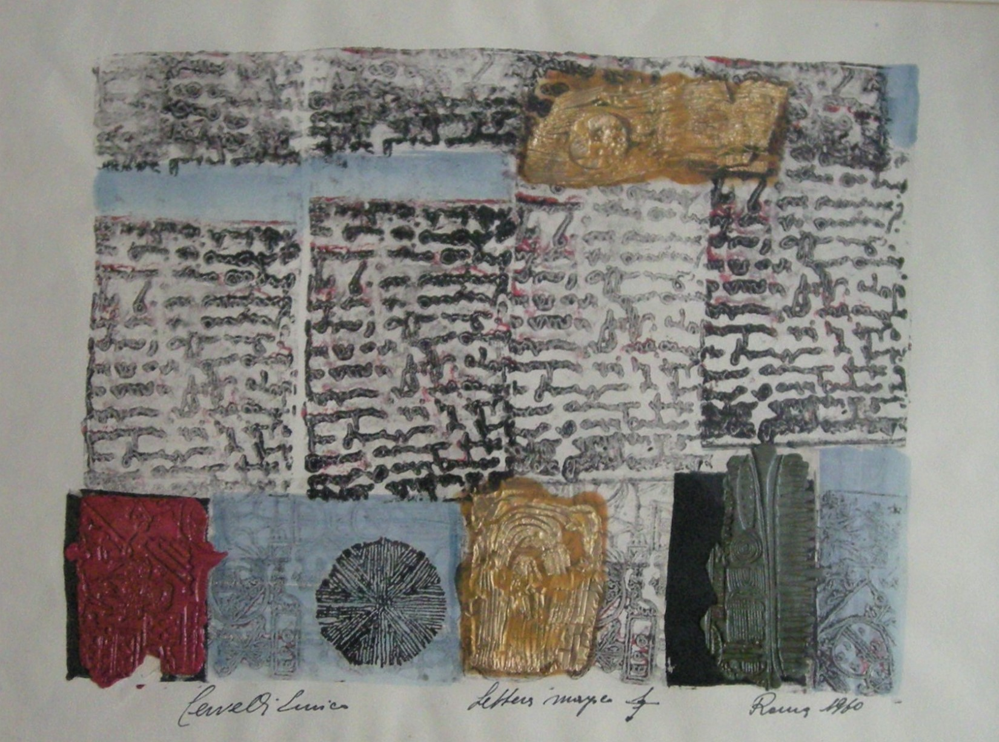

Enrico Cervelli
1927 – 1961
Artist Biography
Italian artist Enrico Cervelli was a talented painter whose international success was cut short by an early death in a car accident. He is also remembered for being Artistic Director on the 1954 Federico Fellini film La Strada and Production Director on Raffaello Matarazzo’s Rice Girl in 1956. Cervelli had an impressive painting career in the 1950s and early1960s, with solo shows including Galleria Numero in Florence in 1955, Gallery O’Hana in London in 1959, Galleria Pogliani in Rome in 1961 and a retrospective at the Grosvenor Gallery, London in 1966. Mixed shows included Gallery One in London in 1958 and the ICA in London in 1960. The Estorick collection of Modern Italian Art holds his work, as did the David Bright Foundation in Los Angeles. A retrospective at the Emilio Villa in the Appian Way Archaeological Park near Rome in 2021 showed the work of Cervelli, who had a studio there, alongside other artists attached to the short-lived but influential gallery based there in the late 1950s. A 1960 review by Michel Strauss in the art magazine The Burlington - of an exhibition of Cervelli’s work at London’s Savage Gallery - described the artwork as calligraphic transpositions of ancient propitiatory rites as presented by the peasants of the Abruzzi region. Cervelli was interpreting ancient rites and symbols in a very modern context. The review described his technique as watercolour, gouache, ink and gold leaf pressed down with sealing wax and Strauss, later to be head of Impressionist & Modern Art at Sotheby’s, said the combination of shapes and colours represented “the best of abstract traditions”.

Lettera Images 7, 1960